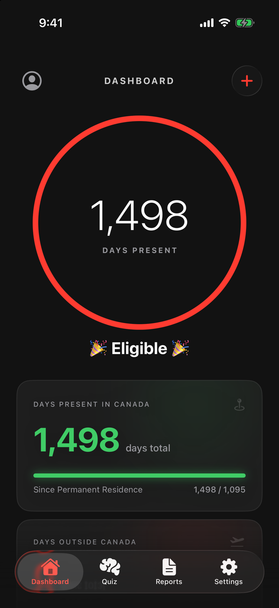
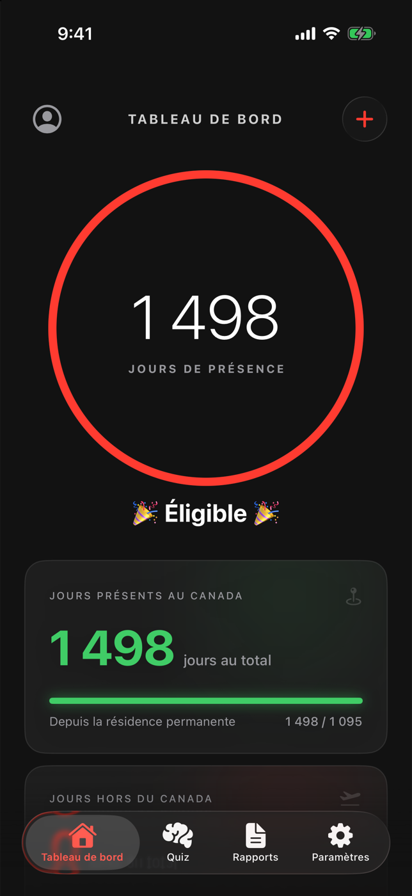

01
Your path, calculated daily.
See days present, days away, remaining time, and your estimated eligibility date without rebuilding a spreadsheet.
Built for life in Canada
Track your physical presence, keep every trip organized, and see your path to Canadian citizenship in one calm, private place.
For iPhone · Requires iOS 18.6 or later · No account required


The whole picture
Maple Tracker turns dates, trips, and residency rules into a dashboard you can understand at a glance.
See days present, days away, remaining time, and your estimated eligibility date without rebuilding a spreadsheet.
Add trips in seconds or enable automatic detection. Edit, review, and select multiple records when cleanup is needed.
Practice citizenship questions by category with immediate feedback and clear explanations.
Generate a bilingual PDF summary of your trips and eligibility calculation for your own records. Always verify official requirements with IRCC.
Simple by design
Start with what you know. Maple Tracker keeps the rest visible as life moves forward.
Add your arrival and permanent residence dates, including eligible pre-PR time.
Record travel manually or let optional location-based detection help identify departures and returns.
Follow the live estimate, prepare a report, and confirm the final result with official IRCC tools.
Privacy by default
Trip and residency data stays on your device unless you choose iCloud sync. Location is processed on device, usage analytics is off by default, and no account is required.
Read the privacy policyGood to know
No. Maple Tracker is an independent personal tracking tool and is not affiliated with the Government of Canada. Always verify eligibility and dates with IRCC before applying.
No. Country detection is performed on your iPhone. Location samples remain local unless you separately enable both iCloud Sync and Location History Sync.
No. You can begin tracking without providing a name, email address, or immigration documents.
Yes. Maple Tracker can generate a bilingual PDF summary of your residency timeline, trips, and current eligibility calculation.
A clearer view of your path to Canadian citizenship, right on your iPhone.
Download on theApp Store